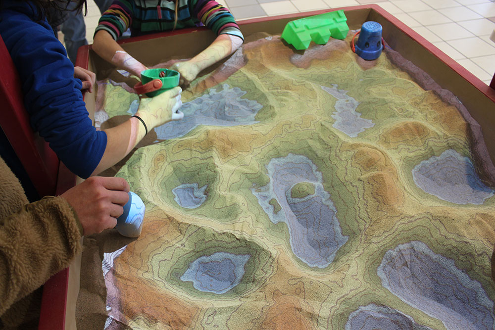

One exciting thing from models is the three-dimensional interactive sandbox.
| Word | Definition |
|---|---|
| Earth Science | the study of Earth and its surrounding spaces |
| Coordinate System | represents a location on a grid system by where two coordinates meet. |
| Inference | conclusion or prediction based on observation and knowledge. |
| Observation | information obtained by five senses or measured by instruments (rulers, thermometers) |
| Density | describes the concentration of matter by the ratio of mass to volume. |
| Unit | the standard of measurements by which other measurements are compared to. |
| Oblate spheroid | a nearly perfect sphere that is slightly flat on the top and bottom and slightly bulging on its side. |
| Lithosphere | the rocky, solid (rigid) outer layer of the Earth. |
| Isoline | a line along which the field value remains the same |
| Isotherm | an isoline along which the temperature remains the same. |
| Contour line | an isoline along which the elevation remains the same |
| Topographic Map | a map with contour lines connecting places with the same elevation. |
| Gradient | the change in field value divided by distance. |
| Profile | Cross section; cutaway view. |
Oxygen is the most abundant element by volume
in Earth’s
(1) inner core (3) hydrosphere
(2) troposphere (4) crust